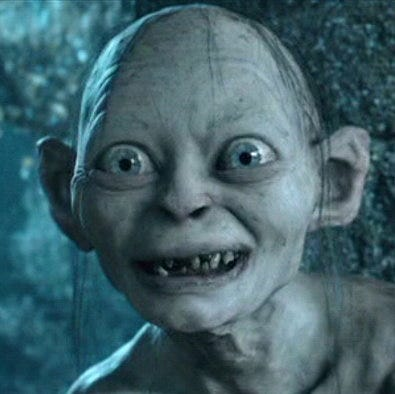

|  |
Gollum is a character who was once a hobbit named Sméagol but was corrupted by a powerful ring, turning him into a twisted and obsessed creature. He's known for his peculiar way of speaking and his deep connection to the One Ring, which he calls "my precious." |